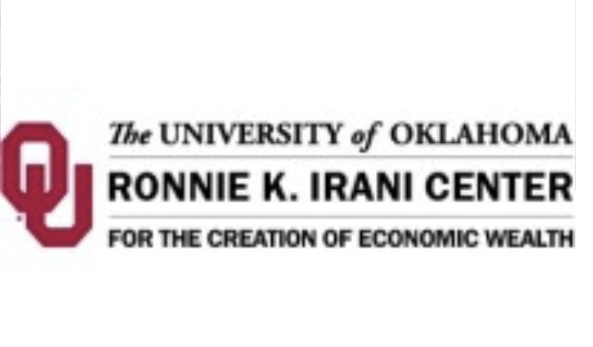
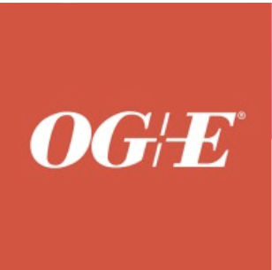
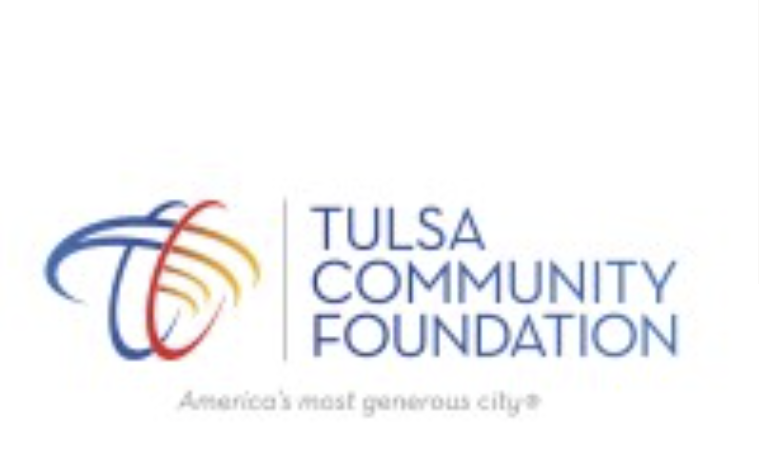
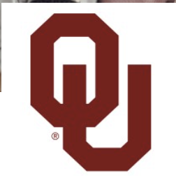
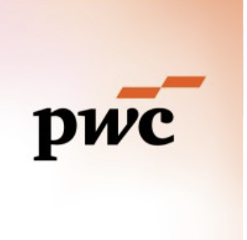
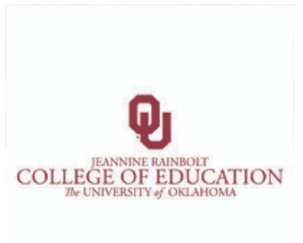
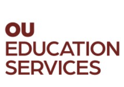

Professional Experience
My journey through internships, research positions, and professional roles in technology, data analytics, and business intelligence.
Work History
Summer Analyst
Goldman Sachs
June 2025 - August 2025 | Salt Lake City, Utah
- Identified, documented, and implemented automation solutions using Alteryx, significantly reducing manual processes and operational risk.
- Developed a centralized dashboard for key metrics and exceptions, increasing transparency across DCS and Futures operations.
- Executed daily reporting tasks, including CMD Risk Checks and Non-Zero Balance reviews, improving accuracy and visibility.
Alteryx
Business Intelligence
Data Analytics
Dashboard Development
Process Automation

Software Developer
The Ronnie K. Irani Center for the Creation of Economic Wealth (I-CCEW)
August 2025 - December 2025 | Norman, Oklahoma (Hybrid)
- Developed software solutions to support entrepreneurship and economic development initiatives.
- Collaborated with cross-functional teams on technology projects.
Software Development
Web Development
Collaboration

Systems Operations Intern/Engineer
OGE Energy Corp.
August 2024 - January 2025 | Oklahoma City Metropolitan Area
- Developed SCADA-based simulation tests for Transmission and Distribution control centers.
- Applied SAP knowledge and software development skills to model power grid operations.
- Engineered comprehensive inventory management system using Power BI, Power Apps, and SharePoint, optimizing data analysis and operational workflows.
- Synthesized complex datasets into compelling narratives using Tableau, delivering executive-level reports that influenced strategic initiatives and operational improvements.
SCADA
SAP
Power BI
Power Apps
SharePoint
Tableau
Microsoft Visio
Power Automate

GKFF 2024 Summer Impact Intern
Tulsa Community Foundation (inTulsa)
May 2024 - July 2024 | Tulsa, Oklahoma (Hybrid)
- Gained hands-on experience with GKFF's talent and economic development initiatives, focusing on creating a vibrant and inclusive community in Tulsa.
- Worked closely with the Research, Analytics, and Data (RAD) team, assisting with data migration, integrations, and developing a website for data reporting and metrics.
- Utilized various technologies and tools, including Dataiku, Lightcast, Salesforce, and others, to support data engineering, analysis, and reporting tasks.
Salesforce
Dataiku DSS
Machine Learning
Random Forest
Logistic Regression
Relational Databases
ERD

DUET Student Fellow
University of Oklahoma - Center for Faculty Excellence
January 2024 - Present | Norman, Oklahoma
- Partnered with faculty to explore and improve teaching and learning practices.
- Attended weekly meetings with other student fellows to discuss pedagogical approaches.
- Collaborated closely with a faculty fellow, meeting weekly and observing their class.
- Participated in cohort gatherings with other fellows to share insights.
Strategic Communications
Professional Mentoring
Personal Development
Communication

Remote Extern
PwC
January 2024 - March 2024 | Remote
- Conducted comprehensive research to develop a nuanced understanding of specific fields relevant to the organization's goals and objectives.
- Analyzed complex challenges spanning fundraising and development, stakeholder management, and impact measurement, utilizing consulting frameworks to identify problem areas and propose viable solutions.
- Created and delivered impactful presentations to nonprofit and social justice organizations, integrating valuable insights, emerging trends, and actionable recommendations.
Consulting
Research
Analysis
Presentations

Math Tutor
University of Oklahoma - Jeannine Rainbolt College of Education
August 2023 - Present | Norman, Oklahoma
- Tutored high school students in algebra to improve their math skills and academic performance.
- Developed supportive mentoring relationships with students to boost their confidence and interest in Math.
- Patiently re-taught and reinforced challenging topics until students demonstrated comprehension and proficiency.
- Provided regular progress updates and tutoring summaries to the program administrators.
Algebra
Tutoring
Mentoring
Student Engagement

Undergraduate Academic Assistant
OU Education Services
February 2023 - May 2024 | Norman, Oklahoma
- Transferred existing courses to new online templates while preserving course integrity and student experience.
- Managed course settings and customizations including assignments, quizzes, gradebooks, and multimedia integration.
- Transferred course content including PowerPoints, videos, readings, and discussions to updated Canvas templates.
- Conducted comprehensive quality reviews of online courses to ensure adherence to university standards and best practices.
Canvas LMS
Course Development
Quality Assurance
Multimedia Integration